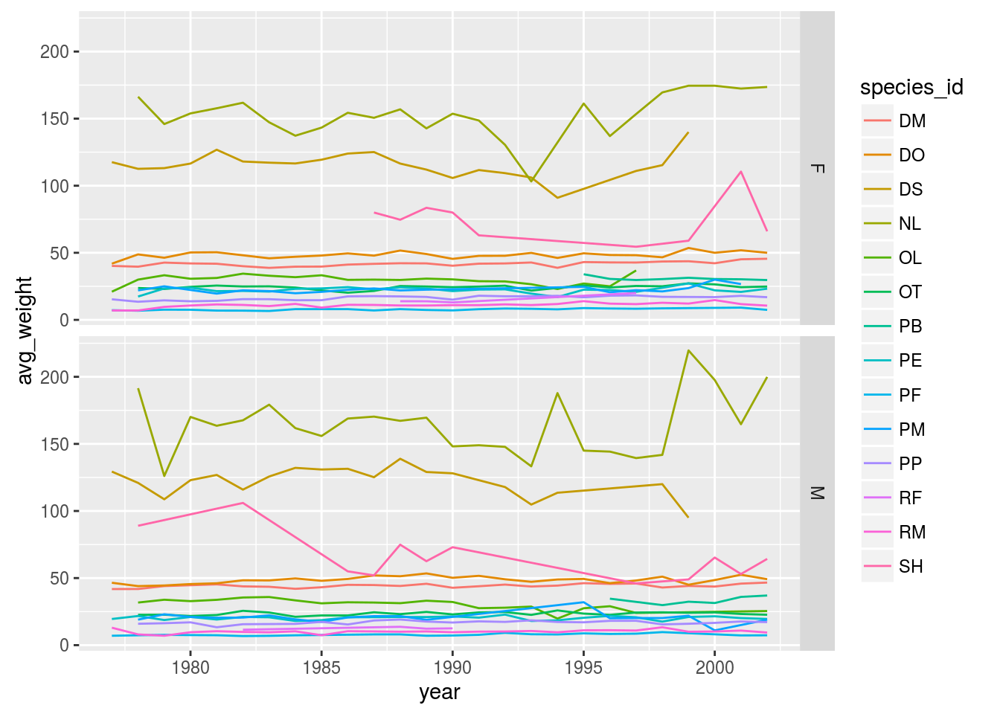
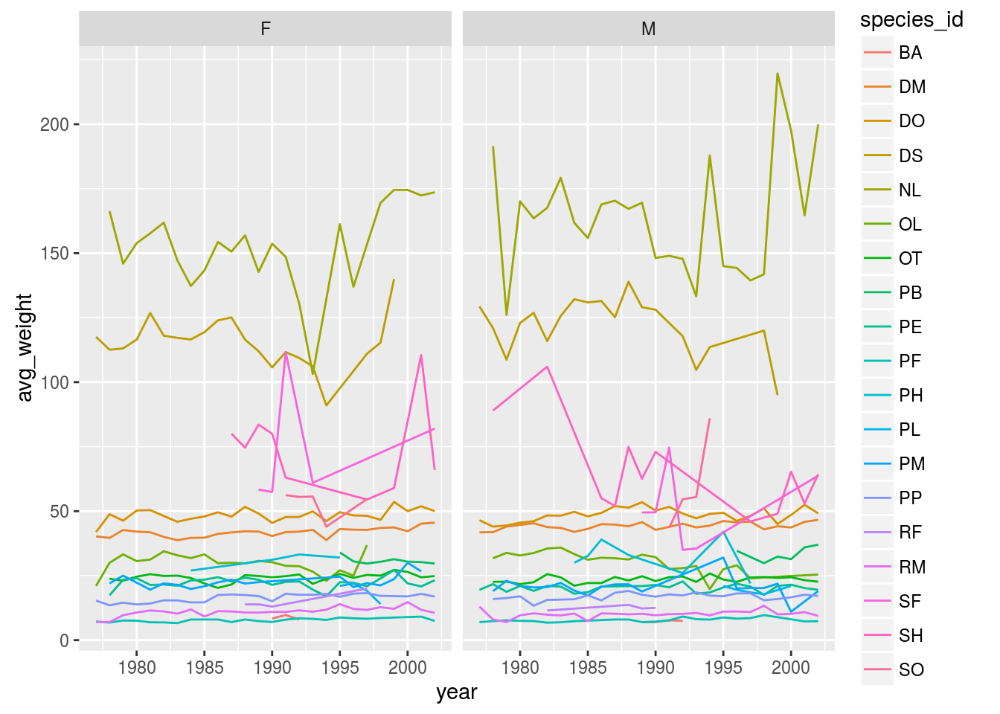
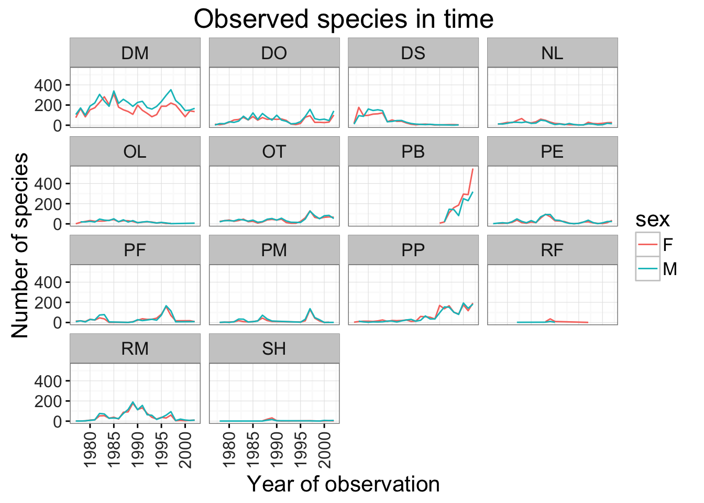

Data visualization with ggplot2
Visualizing data in R with the ggplot2 package
Disclaimer
We will be using the functions in the ggplot2 package. R has powerful built-in plotting capabilities, but for this exercise, we will be using the ggplot2 package, which facilitates the creation of highly-informative plots of structured data.
Learning Objectives
By the end of this lesson the learner will:
- Be able to create a ggplot object
- Be able to set universal plot settings
- Be able to modify an existing ggplot object
- Be able to change the aesthetics of a plot such as colour
- Be able to edit the axis labels
- Know how to use a step-by-step approach to build complex plots
- Be able to create, scatter plots, box plots and time series plots
- Use the facet_wrap and facet_grid commands to create a collection of plots splitting the data by a factor variable
- Be able to create customized plot styles to meet their needs
We start by loading the required packages.
# plotting package
library(ggplot2)
# modern data frame manipulations
library(dplyr)#>
#> Attaching package: 'dplyr'#> The following objects are masked from 'package:stats':
#>
#> filter, lag#> The following objects are masked from 'package:base':
#>
#> intersect, setdiff, setequal, unionPlotting with ggplot2
We will make the same plot using the ggplot2 package.
ggplot2 is a plotting package that makes it simple to create complex plots from data in a dataframe. It uses default settings, which help creating publication quality plots with a minimal amount of settings and tweaking.
ggplot graphics are built step by step by adding new elements.
To build a ggplot we need to:
- bind the plot to a specific data frame using the
dataargument
ggplot(data = surveys_complete)- define aesthetics (
aes), by selecting the variables to be plotted and the variables to define the presentation such as plotting size, shape color, etc.,
ggplot(data = surveys_complete, aes(x = weight, y = hindfoot_length))- add
geoms– graphical representation of the data in the plot (points, lines, bars). To add a geom to the plot use+operator:
ggplot(data = surveys_complete, aes(x = weight, y = hindfoot_length)) +
geom_point()
The + in the ggplot2 package is particularly useful because it allows you to modify existing ggplot objects. This means you can easily set up plot “templates” and conveniently explore different types of plots, so the above plot can also be generated with code like this:
# Create
surveys_plot <- ggplot(data = surveys_complete, aes(x = weight, y = hindfoot_length))
# Draw the plot
surveys_plot + geom_point()Notes:
- Anything you put in the
ggplot()function can be seen by any geom layers that you add (i.e., these are universal plot settings). This includes the x and y axis you set up inaes(). - You can also specify aesthetics for a given geom independently of the aesthetics defined globally in the
ggplot()function.
Building your plots iteratively
Building plots with ggplot is typically an iterative process. We start by defining the dataset we’ll use, lay the axes, and choose a geom.
ggplot(data = surveys_complete, aes(x = weight, y = hindfoot_length)) +
geom_point()
Then, we start modifying this plot to extract more information from it. For instance, we can add transparency (alpha) to avoid overplotting.
ggplot(data = surveys_complete, aes(x = weight, y = hindfoot_length)) +
geom_point(alpha = 0.1)
We can also add colors for all the points
ggplot(data = surveys_complete, aes(x = weight, y = hindfoot_length)) +
geom_point(alpha = 0.1, color = "blue")
Or to color each species in the plot differently:
ggplot(data = surveys_complete, aes(x = weight, y = hindfoot_length)) +
geom_point(alpha = 0.1, aes(color=species_id))
Boxplot
Visualising the distribution of weight within each species.
ggplot(data = surveys_complete, aes(x = species_id, y = hindfoot_length)) +
geom_boxplot()
By adding points to boxplot, we can have a better idea of the number of measurements and of their distribution:
ggplot(data = surveys_complete, aes(x = species_id, y = hindfoot_length)) +
geom_boxplot(alpha = 0) +
geom_jitter(alpha = 0.3, color = "tomato")
Notice how the boxplot layer is behind the jitter layer? What do you need to change in the code to put the boxplot in front of the points such that it’s not hidden.
Challenges
Boxplots are useful summaries, but hide the shape of the distribution. For example, if there is a bimodal distribution, this would not be observed with a boxplot. An alternative to the boxplot is the violin plot (sometimes known as a beanplot), where the shape (of the density of points) is drawn.
- Replace the box plot with a violin plot; see
geom_violin()In many types of data, it is important to consider the scale of the observations. For example, it may be worth changing the scale of the axis to better distribute the observations in the space of the plot. Changing the scale of the axes is done similarly to adding/modifying other components (i.e., by incrementally adding commands).
Represent weight on the log10 scale; see
scale_y_log10()Create boxplot for
hindfoot_length.
- Add color to the datapoints on your boxplot according to the plot from which the sample was taken (
plot_id)
hint: Check the class for plot_id. Consider changing the class of plot_id from integer to factor. Why does this change how R makes the graph?
Plotting time series data
Let’s calculate number of counts per year for each species. To do that we need to group data first and count records within each group.
yearly_counts <- surveys_complete %>%
group_by(year, species_id) %>%
tallyTimelapse data can be visualised as a line plot with years on x axis and counts on y axis.
ggplot(data = yearly_counts, aes(x = year, y = n)) +
geom_line()
Unfortunately this does not work, because we plot data for all the species together. We need to tell ggplot to draw a line for each species by modifying the aesthetic function to include group = species_id.
ggplot(data = yearly_counts, aes(x = year, y = n, group = species_id)) +
geom_line()
We will be able to distinguish species in the plot if we add colors.
ggplot(data = yearly_counts, aes(x = year, y = n, group = species_id, colour = species_id)) +
geom_line()
Faceting
ggplot has a special technique called faceting that allows to split one plot into multiple plots based on a factor included in the dataset. We will use it to make one plot for a time series for each species.
ggplot(data = yearly_counts, aes(x = year, y = n, group = species_id, colour = species_id)) +
geom_line() +
facet_wrap(~ species_id)
Now we would like to split line in each plot by sex of each individual measured. To do that we need to make counts in data frame grouped by year, species_id, and sex:
yearly_sex_counts <- surveys_complete %>%
group_by(year, species_id, sex) %>%
tallyWe can now make the faceted plot splitting further by sex (within a single plot):
ggplot(data = yearly_sex_counts, aes(x = year, y = n, color = species_id, group = sex)) +
geom_line() +
facet_wrap(~ species_id)
Usually plots with white background look more readable when printed. We can set the background to white using the function theme_bw(). Additionally you can also remove the grid.
ggplot(data = yearly_sex_counts, aes(x = year, y = n, color = species_id, group = sex)) +
geom_line() +
facet_wrap(~ species_id) +
theme_bw() +
theme(panel.grid.major.x = element_blank(),
panel.grid.minor.x = element_blank(),
panel.grid.major.y = element_blank(),
panel.grid.minor.y = element_blank())
To make the plot easier to read, we can color by sex instead of species (species are already in separate plots, so we don’t need to distinguish them further).
ggplot(data = yearly_sex_counts, aes(x = year, y = n, color = sex, group = sex)) +
geom_line() +
facet_wrap(~ species_id) +
theme_bw()
Challenge
Use what you just learned to create a plot that depicts how the average weight of each species changes through the years.
The facet_wrap geometry extracts plots into an arbitrary number of dimensions to allow them to cleanly fit on one page. On the other hand, the facet_grid geometry allows you to explicitly specify how you want your plots to be arranged via formula notation (rows ~ columns; a . can be used as a placeholder that indicates only one row or column).
Let’s modify the previous plot to compare how the weights of male and females has changed through time.
## One column, facet by rows
yearly_sex_weight <- surveys_complete %>%
group_by(year, sex, species_id) %>%
summarize(avg_weight = mean(weight))
ggplot(data = yearly_sex_weight, aes(x=year, y=avg_weight, color = species_id, group = species_id)) +
geom_line() +
facet_grid(sex ~ .)
# One row, facet by column
ggplot(data = yearly_sex_weight, aes(x=year, y=avg_weight, color = species_id, group = species_id)) +
geom_line() +
facet_grid(. ~ sex)
Customization
Take a look at the ggplot2 cheat sheet (https://www.rstudio.com/wp-content/uploads/2015/08/ggplot2-cheatsheet.pdf), and think of ways to improve the plot. You can write down some of your ideas as comments in the Etherpad.
Now, let’s change names of axes to something more informative than ‘year’ and ‘n’ and add a title to this figure:
ggplot(data = yearly_sex_counts, aes(x = year, y = n, color = sex, group = sex)) +
geom_line() +
facet_wrap(~ species_id) +
labs(title = 'Observed species in time',
x = 'Year of observation',
y = 'Number of species') +
theme_bw()
The axes have more informative names, but their readability can be improved by increasing the font size. While we are at it, we’ll also change the font family:
ggplot(data = yearly_sex_counts, aes(x = year, y = n, color = sex, group = sex)) +
geom_line() +
facet_wrap(~ species_id) +
labs(title = 'Observed species in time',
x = 'Year of observation',
y = 'Number of species') +
theme_bw() +
theme(text=element_text(size=16, family="Arial"))
After our manipulations we notice that the values on the x-axis are still not properly readable. Let’s change the orientation of the labels and adjust them vertically and horizontally so they don’t overlap. You can use a 90 degree angle, or experiment to find the appropriate angle for diagonally oriented labels.
ggplot(data = yearly_sex_counts, aes(x = year, y = n, color = sex, group = sex)) +
geom_line() +
facet_wrap(~ species_id) +
labs(title = 'Observed species in time',
x = 'Year of observation',
y = 'Number of species') +
theme_bw() +
theme(axis.text.x = element_text(colour="grey20", size=12, angle=90, hjust=.5, vjust=.5),
axis.text.y = element_text(colour="grey20", size=12),
text=element_text(size=16, family="Arial"))
If you like the changes you created to the default theme, you can save them as an object to easily apply them to other plots you may create:
arial_grey_theme <- theme(axis.text.x = element_text(colour="grey20", size=12, angle=90, hjust=.5, vjust=.5),
axis.text.y = element_text(colour="grey20", size=12),
text=element_text(size=16, family="Arial"))
ggplot(surveys_complete, aes(x = species_id, y = hindfoot_length)) +
geom_boxplot() +
arial_grey_theme
With all of this information in hand, please take another five minutes to either improve one of the plots generated in this exercise or create a beautiful graph of your own. Use the RStudio ggplot2 cheat sheet, which we linked earlier for inspiration.
Here are some ideas:
- See if you can change thickness of the lines.
- Can you find a way to change the name of the legend? What about its labels?
- Use a different color palette (see http://www.cookbook-r.com/Graphs/Colors_(ggplot2)/)
After creating your plot, you can save it to a file in your favourite format. You can easily change the dimension (and its resolution) of your plot by adjusting the appropriate arguments (width, height and dpi):
my_plot <- ggplot(data = yearly_sex_counts, aes(x = year, y = n, color = sex, group = sex)) +
geom_line() +
facet_wrap(~ species_id) +
labs(title = 'Observed species in time',
x = 'Year of observation',
y = 'Number of species') +
theme_bw() +
theme(axis.text.x = element_text(colour="grey20", size=12, angle=90, hjust=.5, vjust=.5),
axis.text.y = element_text(colour="grey20", size=12),
text=element_text(size=16, family="Arial"))
ggsave("name_of_file.png", my_plot, width=15, height=10)